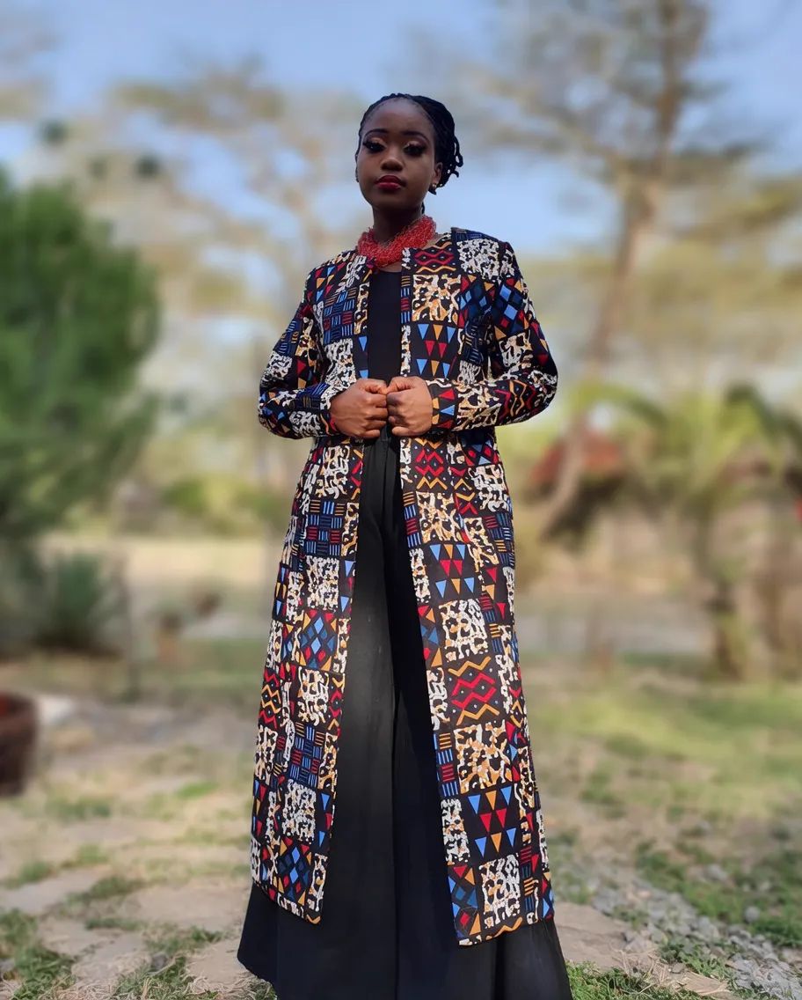

Odeća / Mantili i sakoi
Mantil dugi, tribal
7.200 din.
Poslednji u ovom dezenu.
- Plaćanje pouzećem, kuriru kad paket stigne
- Na stanju, isporuka 2–3 dana
- Besplatna dostava u Srbiji preko 4.000 din.
Opis
Mantili i sakoi šiju se u Keniji, od 100% pamučnih tkanina. Dezen možete izabrati sami, sa stranice tkanina, a umesto pamuka možete izabrati i batik ili svilu.
Mere i prilagođavanje
Proverite obim grudi, struka i kukova prema tabeli veličina. Ako su vam kukovi veći od grudi, javite nam i prilagodićemo model. Kada izaberete veličinu, izaberite i dužinu, gde je to moguće.
Nega
Pranje na 40 °C u mašini. Peglanje na paru.
Dostava
Artikli na stanju stižu za 2–3 dana, a komadi iz izrade za oko tri nedelje. Dostava je besplatna za porudžbine preko 4.000 din. u Srbiji.